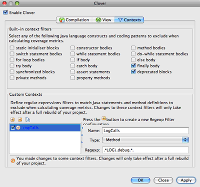
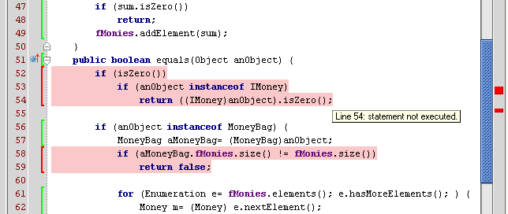

Viewing Coverage Results
Clover will record the code coverage information each time you run your application or a unit-test. This coverage information is available for viewing using IDEA.
The coverage information can be browsed using the "Cloverage" window. The upper portion of the tool window contains a project class browser with inline coverage information:
The tool bar at the top of the browser contains the following buttons:
 Flatten
Packages. With this selected, only concrete packages are shown in the browser.
Flatten
Packages. With this selected, only concrete packages are shown in the browser.
- Autoscroll to Source. With this selected, a single click on a class in the browser will load the corresponding source file in an editor pane, with coverage info overlaid.
- Autoscroll from Source. With this selected, the coverage browser will track the currently active source file in the editor pane.
- Always view package in the Cloud report. When this is selected the Cloud view will automatically show a package selected in this tree.
- Show Coverage Summary. With this selected, the Coverage metrics (see below) will be visible.
- Generate Report. Launches a dialog to create a coverage report in HTML, XML or PDF format.
- Cloud report for selected package. Opens Cloud report for selected package.
- Refresh. Reloads coverage data.
 Clean
Coverage. Cleans gathered coverage data without deleting the instrumentation database.
Clean
Coverage. Cleans gathered coverage data without deleting the instrumentation database.
- Delete. Delete the current coverage database.
- Set Context Filter. Launches a dialog to set the context filter.
 Hide
Fully Covered Elements. Removes elements with 100% coverage from view.
Hide
Fully Covered Elements. Removes elements with 100% coverage from view.
- Set Coverage Scope. Choose which classes should be included in the Clover Coverage View - only application classes, only test classes or all classes.
Coverage tree map reports
The coverage tree map report allows simultaneous comparison of classes and package by complexity and by code coverage. The tree map is divided by a package (labeled) and then further divided by a class (unlabeled). The size of the package or the class indicates its complexity (larger squares indicate great complexity, while smaller squares indicate less complexity). Colors indicate the level of coverage, as follows:
- Bright green (most covered)
- Dark green (more coverage)
- Vivid yellow (around 70% coverage)
- Dark yellow
- Bight red (little coverage)
- Dark red (uncovered)
The percentage shown in the yellow box is the code coverage for the class currently under the mouse.
View the TreeMap report for current project using the  button.
button.
Setting Context Filters
The types of classes you want included in the Clover Coverage View can be set with Context Filters:
Screenshot: Setting Context Filters

Using the Tool Window
The lower portion of the Tool Window contains various Metrics for the currently selected node in the browser:
Screenshot: Clover Tool Window Summary
Showing Coverage with Annotations
In addition, the plugin can annotate the Java code with the coverage information. This can be turned
on by pressing the Show Coverage  toolbar button.
toolbar button.
Screenshot: Annotated Java Code

If you do not have "Auto Coverage Refresh" enabled, you will need to press the Refresh Button in the Main Toolbar or the Clover Tool Window to see the updated coverage information.
If a source file has changed since a Clover build, then a warning will be displayed alerting you to fact that the inline coverage information may not be accurate. The coverage highlighting will be yellow, rather than the red shown above.
Now you perfectly know how your application is covered. But how to efficiently navigate between tests and application code? Read the 3. Exploration of test results in IDEAchapter.